Getting started
Everything happens on one screen. Load a file, and the tabs across the top become the different ways of looking at the same dataset — they are views, not a wizard, so you can move between them freely and your selection follows you.
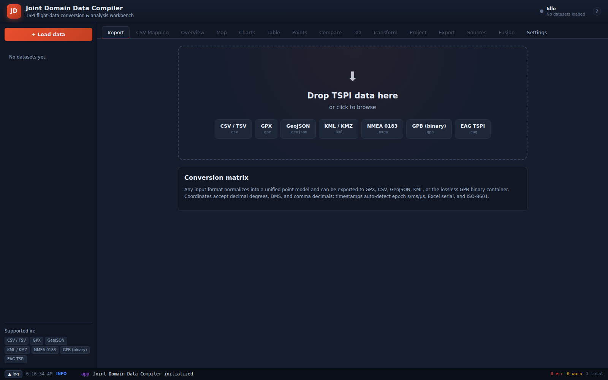
- Press + Load data (or drag files onto the Import tab).
- A CSV takes you to CSV Mapping to confirm which columns are latitude, longitude, altitude, and time. Every other format loads straight through.
- Work through the tabs: Overview for a health scan, Map/Charts/3D to look at it, Transform to fix it, Export to write it back out.
The workbench
The frame around every view: what is loaded, what the app is doing, and what it has logged.
| Element | What it does |
|---|---|
| Dataset list | One row per loaded dataset, with its format and point count. Click a row to make it the active dataset — every view follows the active dataset. The × removes it along with its history, operation records, recipes, and bookmarks. |
| Status light | Idle, busy, ready, warning, or error, with a count. Errors take precedence over warnings, warnings over ready, so the worst current state is always what you see. |
| Tab bar | Tabs enable themselves as they become usable: most need an active dataset, Compare and Fusion need two, Project needs at least one. A disabled tab means the data it needs is not loaded yet. |
| Undo / Redo | Steps through applied transforms for the active dataset. History is per dataset, so undoing on one track never touches another. |
| Log dock | The bar along the bottom. Collapsed by default showing the last line; expand it for the full stream with level and text filters, plus Export and Clear. |
| Toasts | Transient confirmations in the corner, up to three at a time. They dismiss themselves; the same information is in the log if you miss one. |
| Unsaved-changes guard | Closing the desktop app with unsaved work prompts first. Saving a project clears the flag. |
Importing data
Seven input formats, all normalised into one internal shape: degrees, metres, and epoch milliseconds. Conversion happens once, at import.
| Format | Extensions | Notes |
|---|---|---|
| CSV / TSV | .csv .tsv .txt | Any column layout; you map the columns yourself on the next tab. |
| GPX | .gpx | Track points, including extension channels. |
| GeoJSON | .geojson .json | LineString and Point features. |
| KML / KMZ | .kml .kmz | Placemarks and Google gx:Track. |
| NMEA 0183 | .nmea .gps .log | GGA, GLL, RMC, VTG, ZDA, GSA, and GSV sentences. |
| GPB | .gpb .bin | The app's own compact binary format. |
| EAG TSPI | .txt | NATO range instrumentation, including IRIG and range-time encodings. |
CSV mapping
A CSV has no agreed schema, so this tab is where you say what its columns mean. It guesses first, and shows you how confident it is.
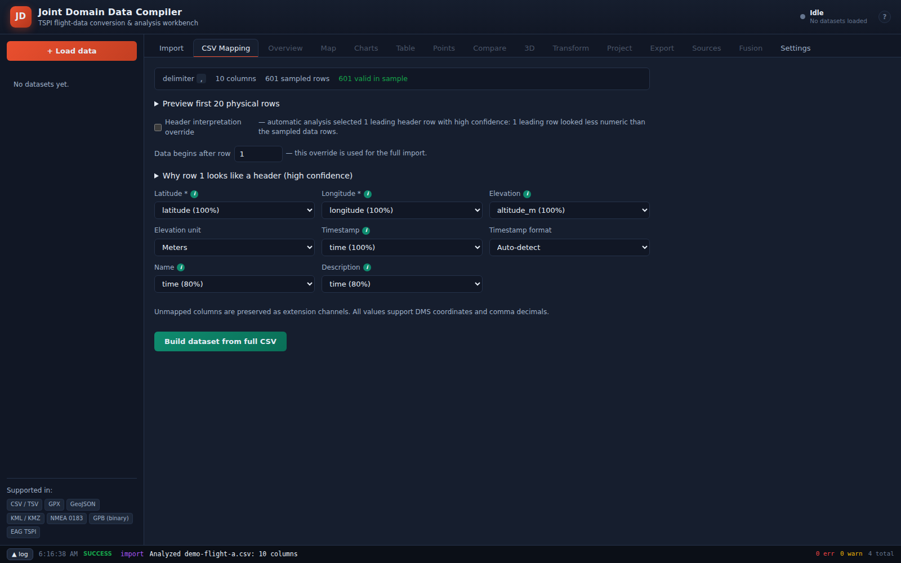
| Control | What it does |
|---|---|
| Latitude / Longitude | Required. The Build button stays disabled until both are set. A confidence percentage next to each shows how sure the detector was. |
| Swap hint | If the values look transposed — latitudes outside ±90, say — a banner offers to swap them rather than silently importing a track on the wrong side of the world. |
| Elevation + unit | Optional. Pick the source unit; it is converted to metres on import. |
| Timestamp + format | Optional but strongly recommended: speed, resampling, gap filling, comparison, and most of Track Health all need time. |
| Header interpretation | Override when the first row is data rather than headers, or when data starts several rows down. |
| Build dataset from full CSV | Streams the whole file with a progress bar you can cancel. The preview above is a sample; this reads everything. |
Overview & Track Health
The first thing to look at after loading. Track Health scores the track out of 100 across seven checks; below it, the metrics and statistics describe what actually came in.
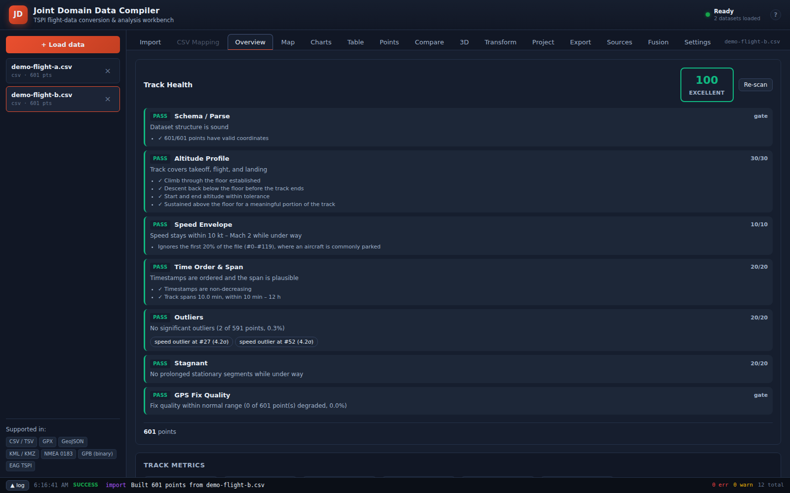
| Check | Weight | What it asks |
|---|---|---|
| Schema / Parse | Gate | Is the dataset structurally sound and are the coordinates valid? A failure here blocks the rest. |
| Altitude Profile | 30 | Does this look like a complete flight — a climb through 1000 ft, sustained time above it, and a descent back below before the track ends? |
| Speed Envelope | 10 | Does derived speed stay between 10 kt and Mach 2 while under way? The parked portion at the start of a file is ignored. |
| Time Order & Span | 20 | Are timestamps non-decreasing, and is the total span plausible? |
| Outliers | 20 | Do more than 5% of samples break the local trend? Detection is turn-aware, so a sustained legitimate turn is not read as noise. |
| Stagnant | 20 | Is there a prolonged stationary segment in the middle of movement? |
| GPS Fix Quality | Informational | Reports degraded HDOP or low satellite count where the source carries them. Never affects the score. |
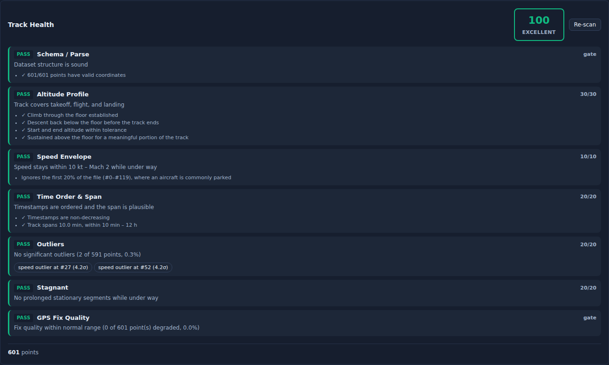
Every flagged sample becomes a chip you can click to jump straight to that point on the Map or Charts tab. Where a check can offer a fix, it does — see Repairing a track.
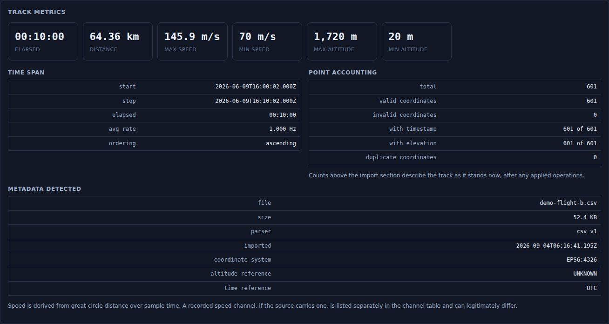
Map
The track in plan view, with every other loaded track available as context.
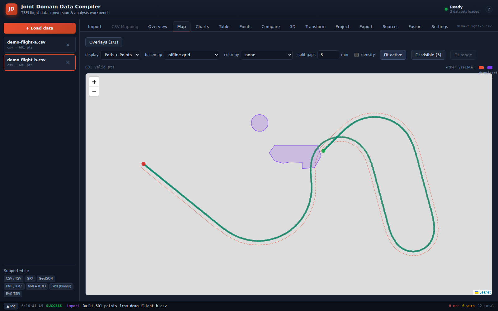
| Control | What it does |
|---|---|
| display | Path + Points, Path only, or Points only. Points only is the one to use when you care about sample spacing rather than the route. |
| basemap | OpenStreetMap, OSM Dark, OSM Humanitarian, OpenTopoMap, or an offline grid. The offline grid needs no network at all. |
| color by | Shade points by elevation or by any numeric channel. A legend appears with the value range. |
| split gaps | Break the drawn path where the time gap exceeds this many minutes, so a pause does not become a straight line across the map. |
| density | A binned heat view for spotting where samples cluster. The cell size is in metres. |
| Fit active / visible / range | Zoom to the active track, to everything visible, or to the current selection. |
| Quality markers | Gaps and jumps are marked in place, so a problem is visible where it happened. |
Charts
Any numeric channel against time, sample index, distance, or — on a scatter — another channel. Selections here are shared with every other view.
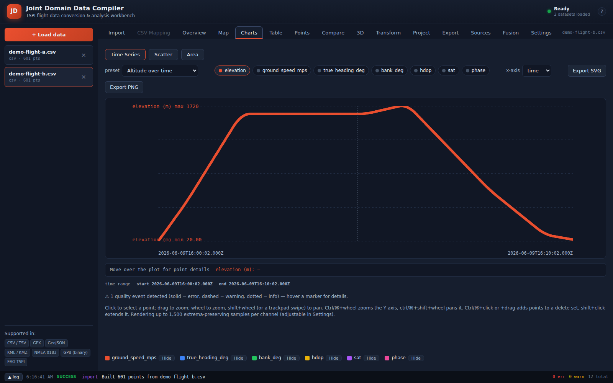
| Control | What it does |
|---|---|
| Time Series / Scatter / Area | Line, points-only, or filled to the baseline. Scatter is the only type that accepts another channel as its x-axis, because a line through non-monotonic values would be meaningless. |
| preset | Ready-made channel groupings — altitude, speed, heading, timing, distance. |
| x-axis | Time, sample index, cumulative distance, or (scatter only) any numeric channel. |
| Export SVG / PNG | Writes the current chart to a file, at the resolution you see. |
| Reset zoom | Clears both axes back to the full extent. |
Chart gestures
| Gesture | Effect |
|---|---|
| Click | Select that point everywhere |
| Drag | Zoom to the dragged x-range |
| Wheel | Zoom the x-axis about the cursor |
| Shift + wheel | Pan the x-axis |
| Ctrl/⌘ + wheel | Zoom the y-axis |
| Ctrl/⌘ + Shift + wheel | Pan the y-axis |
| Ctrl/⌘ + click or drag | Add points to a delete set |
| Shift + click | Extend the delete set |
Table
Every sample as a row. Virtualised, so a hundred thousand points scroll without complaint, and fully keyboard-operable.
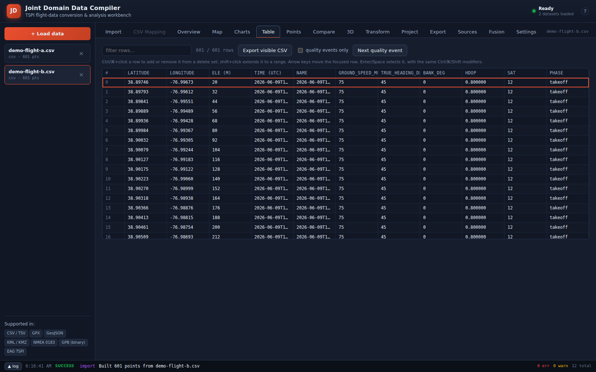
| Control | What it does |
|---|---|
| Filter | Substring match across every value in the row. |
| quality events only | Narrows to rows the quality detector flagged. |
| selected range only | Narrows to the current selection from any other view. |
| Column headers | Click to sort ascending, again for descending, again to return to file order. |
| Export visible CSV | Writes exactly what the filters and sort are showing, not the whole dataset. |
| Delete set | Removes the multi-selected rows as one undoable operation. |
Grid keyboard control
| Key | Effect |
|---|---|
| ↑ ↓ | Move the focus ring one row |
| PageUp PageDown | Move a screenful |
| Home End | Jump to the first or last row |
| Enter / Space | Select the focused row |
| Ctrl/⌘ + Enter | Add or remove it from the selection set |
| Shift + Enter | Extend the selection to it |
Points
One sample at a time, in full, with its neighbours drawn around it. This is where you go when a single point looks wrong.
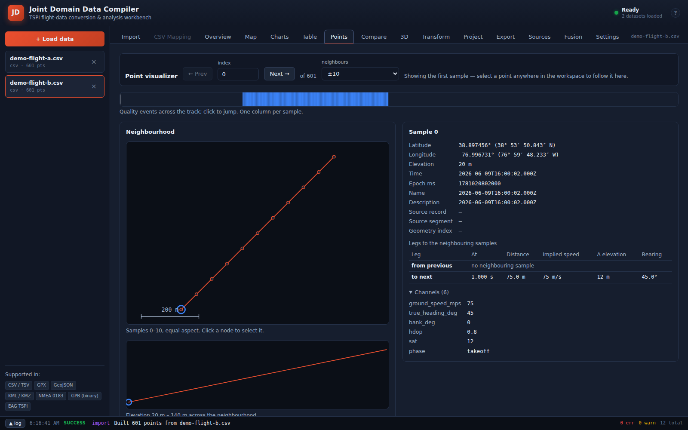
| Element | What it shows |
|---|---|
| Quality strip | The whole track as a colour bar by severity. Click anywhere in it to jump to that region. |
| Neighbourhood plan | A local, equal-aspect plot of the surrounding samples with a scale bar — the view that makes a position spike obvious. |
| Point fields | Latitude and longitude in both decimal and degrees-minutes-seconds, elevation, time in ISO and epoch milliseconds, and source provenance. |
| Neighbour deltas | Time, distance, implied speed, elevation change, and bearing to the previous and next samples. An implied speed over a zero or backward interval is left blank rather than shown as infinity. |
| Channels | Every extension channel on this sample, with a badge on any that a later edit made stale. |
Compare
Two tracks, time-aligned, reduced to relative geometry: how far apart, in what direction, closing or opening.
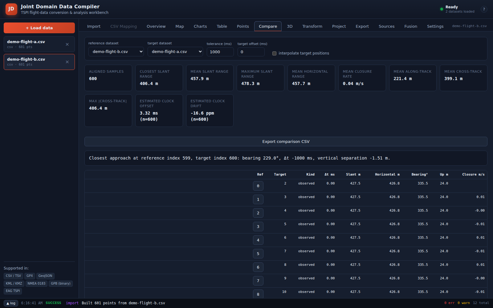
| Control | What it does |
|---|---|
| reference / target | Which track is the origin of the relative frame, and which is measured against it. |
| tolerance (ms) | How far apart two samples may be in time and still be paired. Widen it when the two sources log at different rates. |
| target offset (ms) | Shift the target in time before aligning, to correct a known clock offset. |
| interpolate target positions | Instead of pairing with the nearest real sample, interpolate the target's position at each reference timestamp. More precise ranges, at the cost of the clock-drift estimate, which is not meaningful in this mode and is shown as unavailable rather than as zero. |
| Export comparison CSV | Writes every aligned sample, not the first 250 the table displays. |
3D
The trajectory in space, with playback. Useful for reading vertical structure that a plan view flattens away.
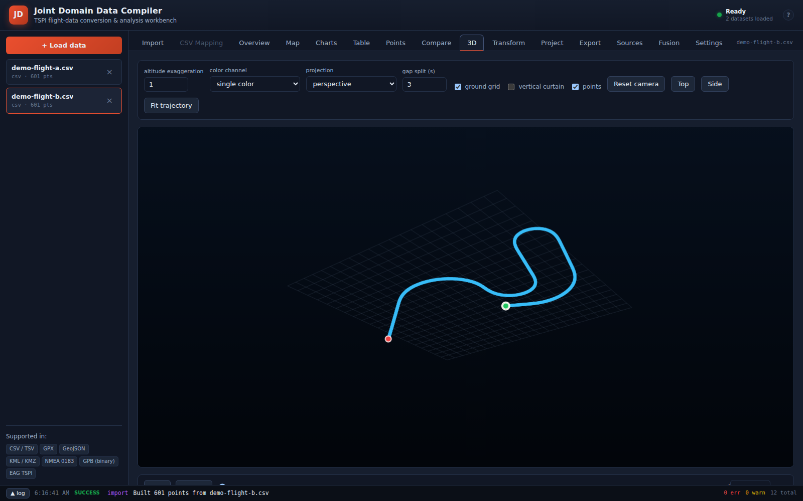
| Control | What it does |
|---|---|
| altitude exaggeration | Scales the vertical axis from 0.1× to 100×. A long, shallow flight needs exaggeration before its profile is readable. |
| projection | Perspective for a natural view, orthographic for measuring shape without foreshortening. |
| ground grid / vertical curtain | A reference plane, and dropped lines from the track to it, to make altitude legible. |
| Reset / Top / Side / Fit | Preset camera positions. |
| Playback | Play, pause, restart, scrub, and 0.25×–4× speed. The cursor stays linked to the other views as it moves. |
Transform
Every operation that changes the data. All of them are undoable, all of them are recorded, and all of them preserve provenance.
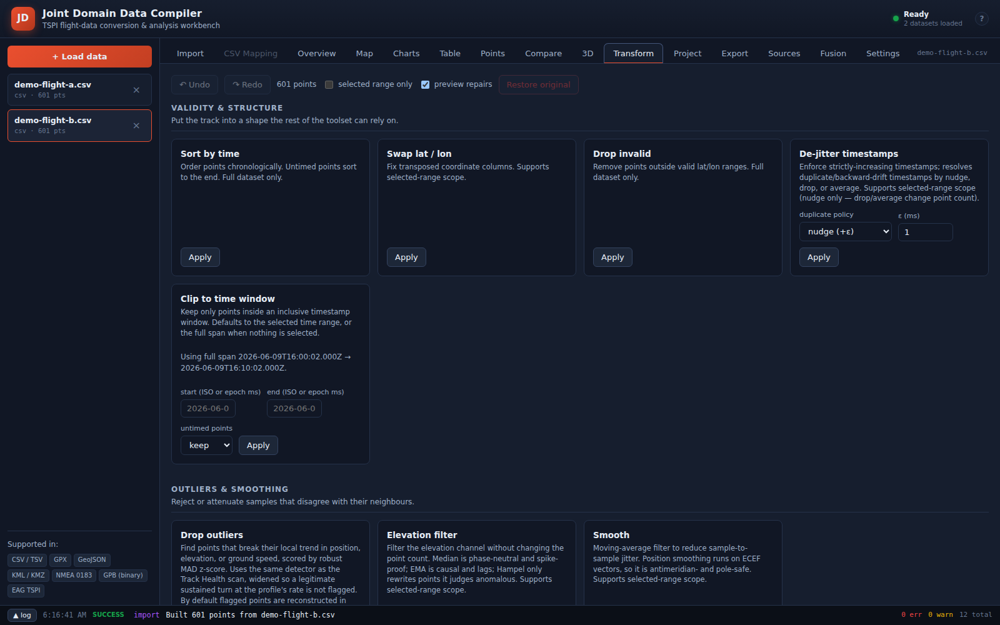
| Operation | What it does |
|---|---|
| Sort by time | Reorders samples into ascending time. |
| Swap lat/lon | Fixes a transposed import. |
| Drop invalid | Removes samples with unusable coordinates. |
| De-jitter timestamps | Cleans up equal or backward timestamps by nudging, dropping, or averaging them. |
| Clip to time window | Keeps only samples inside a start/end window, with an explicit policy for untimed points. |
| Drop outliers | Finds samples breaking the local trend and, by default, refits them from their neighbours rather than deleting them. See below. |
| Elevation filter | Median, exponential-moving-average, or Hampel smoothing of the altitude channel only. |
| Smooth | Windowed smoothing of position, elevation, or both. |
| Reduce points | Deduplicate, decimate by a factor, or simplify to a distance tolerance. |
| Round precision | Trims stored decimal places on coordinates, elevation, and channels. |
| Resample to fixed rate | Re-times the track onto a regular rate, optionally skipping large gaps instead of inventing across them. |
| Resample by distance | Re-samples at a fixed spacing along the path. |
| Fill gaps | Synthesises samples across time gaps above a threshold, gated by a motion profile so the fit stays physically plausible. |
| Derive kinematics | Computes distance, speed, heading, turn rate, and acceleration channels from position and time. |
| Shift time / Offset elevation | Applies a constant offset to every sample. |
Motion profiles
Drop outliers and Fill gaps both take a motion profile — Aircraft, Ground vehicle, Marine, or None — which sets ceilings on speed, vertical speed, and turn rate. Any reconstructed sample that would violate those ceilings is rejected rather than written. Aircraft is the default; the default is configurable in Settings.
Scope, history, and recipes
| Control | What it does |
|---|---|
| Scope to selection | Applies the next operation only to the selected range instead of the whole track. |
| Preview repairs | Routes operations with a visualisable difference through a before/after gate instead of applying them straight away. |
| Operation history | Everything applied to this dataset, in order, with parameters. |
| Replay verified history | Re-runs the recorded sequence against the original import, checked against a hash so replay cannot silently diverge. |
| Named recipes | Saves a sequence to re-apply to another dataset. Recipes show whether they are still replayable. |
| Restore original | Returns to the dataset exactly as imported, discarding every applied operation. |
Repairing a track
When Track Health fails the outlier check, it offers the fix directly, using the same detector settings it graded against — so what is reported and what is repaired cannot disagree.
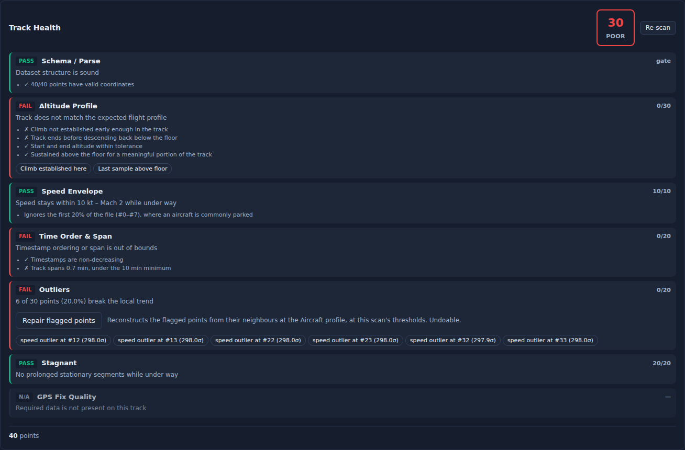
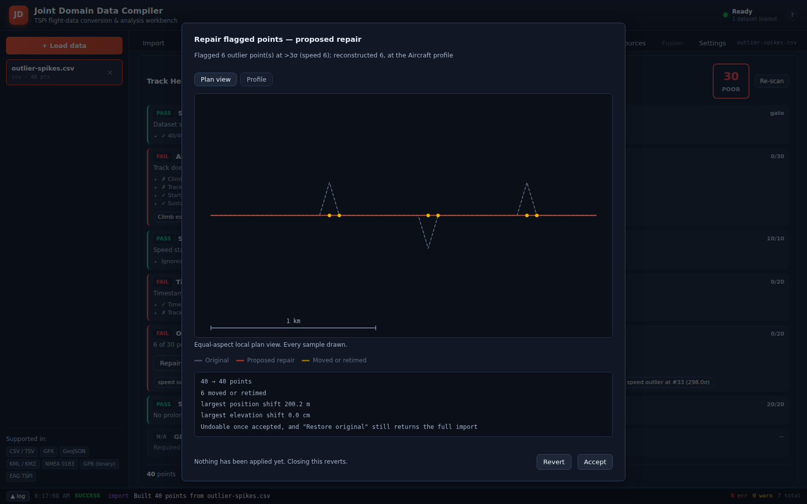
- Press Repair flagged points. The repair is computed but not applied.
- Read the fact list: how many points before and after, how many moved, and the largest position and elevation shift.
- Revert discards it and changes nothing. Accept applies it as a single undoable operation.
interpolated
in its provenance, counted on the Overview tab, and disclosed in the HTML report. A synthesised
sample is never presented as an observed one.
Fusion
Combine several sources covering the same event into one track, with a record of which source won at each moment.
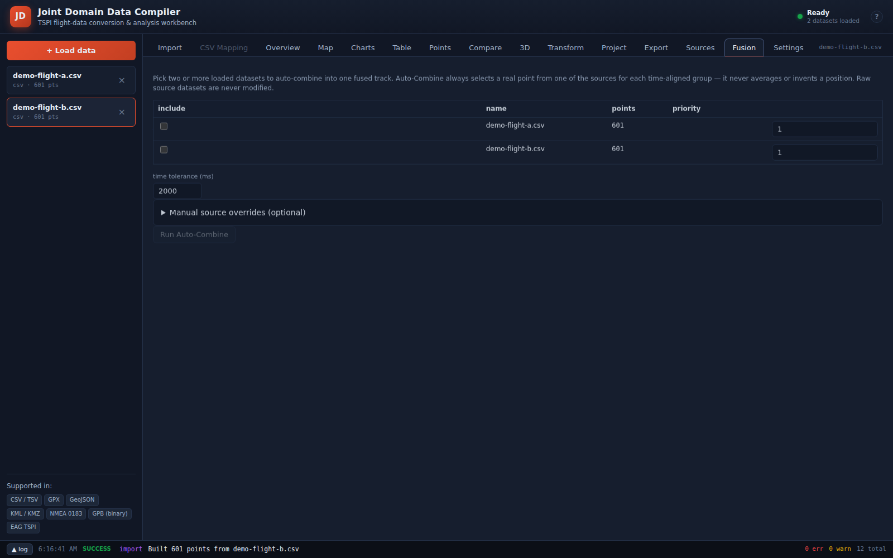
Select at least two sources, give each a priority, set the time tolerance that decides which samples describe the same instant, and run Auto-Combine. The result is a new dataset — sources are never modified. The decision timeline records every choice, and manual overrides let you force a particular source over a chosen interval.
Sources
Which loaded datasets are drawn as context in the other views, and which one is active.
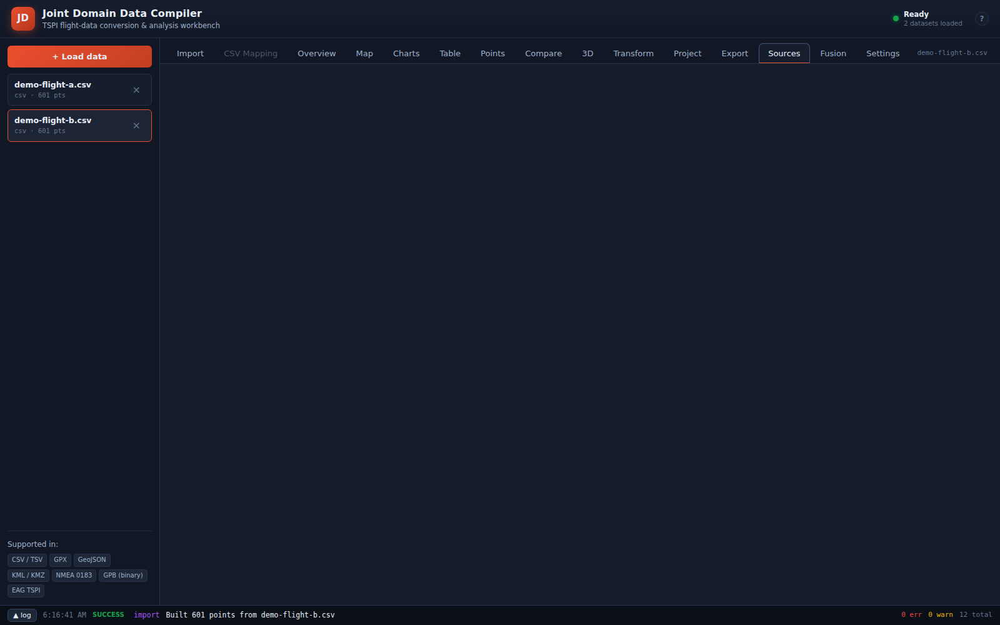
Export
Write the dataset back out. The preview pane shows what is actually about to be written before you commit to it.
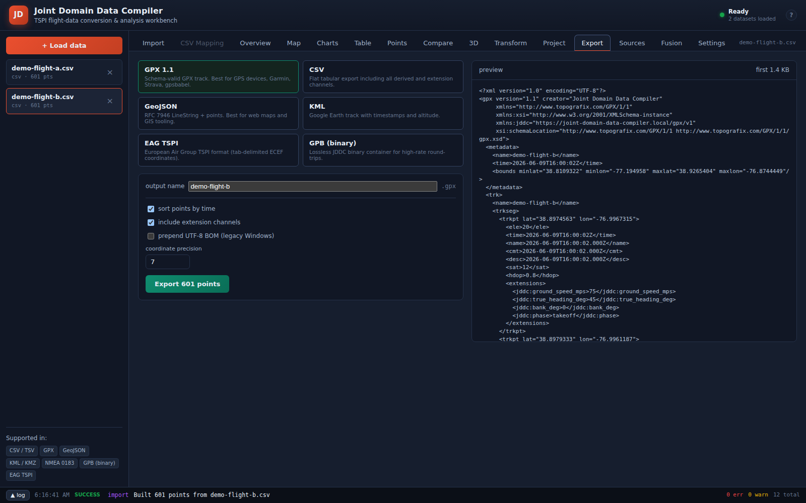
| Format | Carries |
|---|---|
| GPX | Coordinates, elevation, time, and optionally extension channels. Options for sort-by-time, byte-order mark, and coordinate precision. |
| CSV | A flat table of every field and channel. |
| GeoJSON | Standard feature geometry. |
| KML | For Google Earth and similar viewers. |
| EAG TSPI | NATO range format, with platform type, exercise, and mission identifiers. |
| GPB | The app's compact binary format — the most faithful for coordinates and numeric channels. |
Project & reports
Save the whole session — datasets, history, selections, bookmarks, notes — or export a self-contained report of what you found.
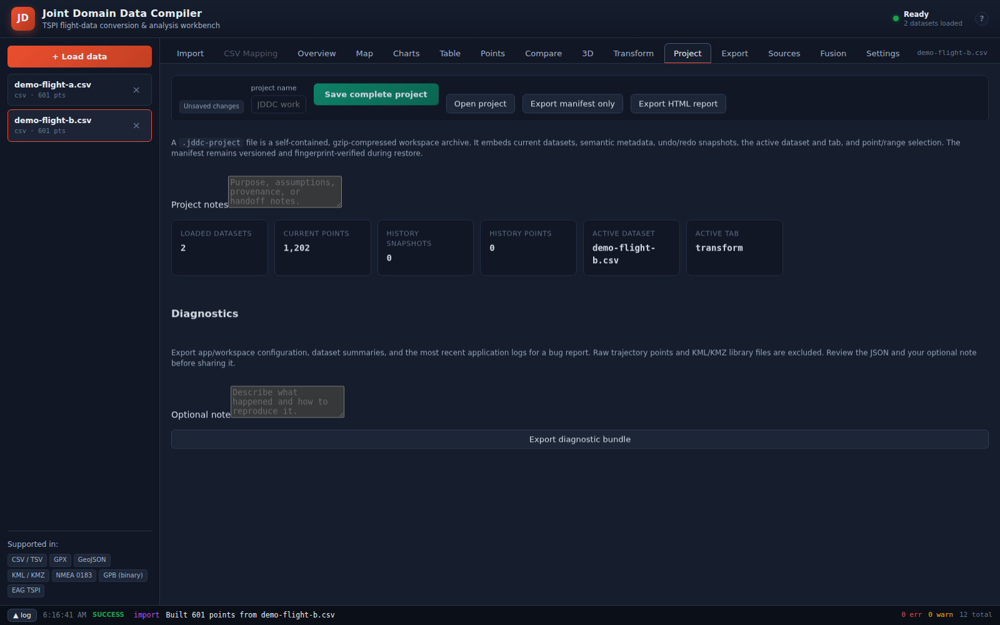
| Action | What it produces |
|---|---|
| Save complete project | A .jddc-project archive: every dataset, its history snapshots, operation records, recipes, bookmarks, notes, and workspace state. |
| Open project | Restores all of the above. Confirms first, since it replaces the current session. |
| Export manifest only | The human-readable project description with no embedded point data. |
| Export HTML report | A self-contained analysis report — see below. |
| Export diagnostic bundle | Logs and environment details for a bug report, with a note you write yourself. |
The HTML analysis report
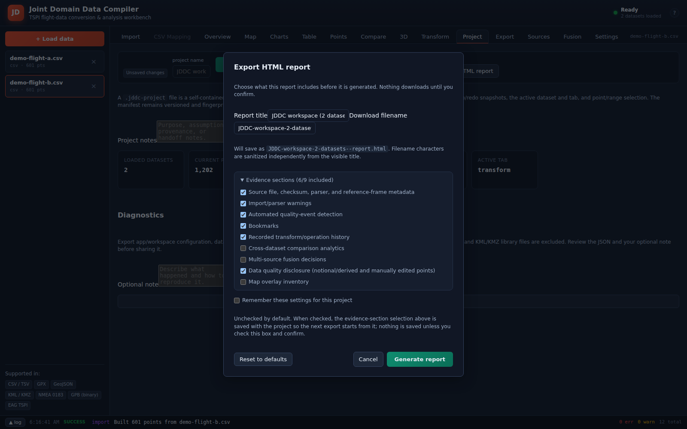
Nine evidence sections can be included or left out: source metadata, import warnings, quality events, bookmarks, operation history, cross-dataset comparison, fusion decisions, data quality, and the map overlay inventory. Comparison, fusion, and overlays are off by default; the rest are on. Remember these settings for this project saves your choice with the project — it is unchecked by default and nothing is persisted unless you tick it.
Settings
Stored on this device, not inside any project — opening a different project keeps these values.
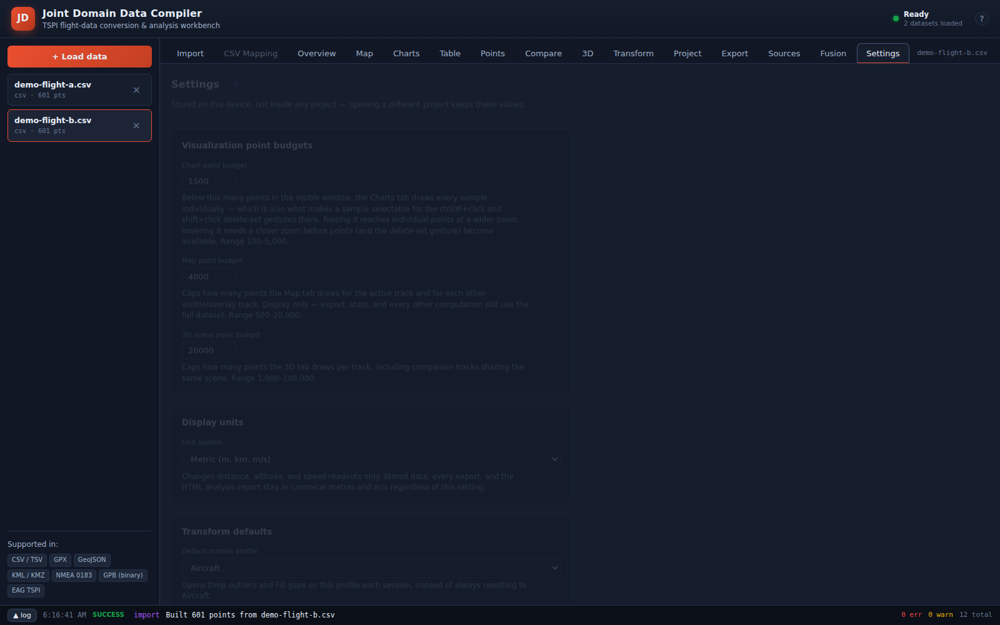
| Setting | What it changes |
|---|---|
| Chart / Map / 3D point budget | How many samples each renderer draws. Display only — statistics, analysis, and export always use every point. Raise it for fidelity, lower it for responsiveness on very large tracks. |
| Unit system | Metric (m, km, m/s) or aviation/marine (ft, NM, kn). Changes distance, altitude, and speed readouts only. Channel values keep their own units, and stored data, exports, and reports stay in metres and m/s. |
| Default motion profile | Which profile Drop outliers and Fill gaps open on each session. |
| Reset to defaults | Restores every setting above. Disabled when nothing differs from the defaults. |
Keyboard reference
Selection keys work in whichever view has focus, and the selection is shared across all of them.
| Key | Effect |
|---|---|
| ← → | Move the synchronised cursor one sample |
| Shift + ←/→ | Extend the selected range |
| Home End | Jump to the first or last sample |
| Enter | Select the sample under the cursor |
| Esc | Clear the selection. Inside a dialog, closes it without applying. |
| Ctrl/⌘ + click | Add or remove one item from a multi-selection |
| Shift + click | Extend a multi-selection to the clicked item |
Worked examples
Importing and mapping a CSV
- + Load data, choose the file. The CSV Mapping tab opens with its guesses filled in.
- Confirm latitude and longitude. Check the confidence figures, and take the swap hint seriously if it appears.
- Set the timestamp column and its format. Without it, speed, resampling, gap filling, and most of Track Health are unavailable.
- Set the elevation column and its source unit.
- Build dataset from full CSV, then go to Overview and read the health scan before doing anything else.
Comparing two tracks
- Load both. The Compare tab enables once there are two datasets.
- Pick reference and target. The reference defines the origin of the relative frame.
- If nothing aligns, raise the tolerance — the two sources probably log at different rates.
- If they are offset by a known clock error, put it in target offset rather than editing timestamps.
- Read the summary cards, then Export comparison CSV for every aligned sample rather than the 250 shown.
Repairing outliers
- Overview → look at the Outliers check. If it failed, the flagged samples are listed as chips.
- Click a chip to inspect that sample on the Map or Charts tab, and confirm it is genuinely bad rather than a real manoeuvre.
- Repair flagged points, read the preview, then Accept or Revert.
- Re-scan. The score should improve and the point count should be unchanged.
- If you disagree with the result, undo it — or use Transform → Drop outliers to run the same operation with your own thresholds and motion profile.
Exporting a dataset
- Export, choose the format card. Read the warnings listed for that format.
- Set the output name and any format options.
- Check the live preview — it is the real output, not a mock-up.
- If the dataset contains synthesised samples, acknowledge the notional-data gate.
- Export. For a record of how the data got to this state, also export the HTML report from the Project tab.
How your data is treated
The rules the app holds itself to. They explain most of its more cautious behaviour.
| Rule | What it means for you |
|---|---|
| Never fabricate data | Downsampling is display-only; export always writes the full dataset. Any synthesised sample is flagged in provenance, counted on Overview, and disclosed in reports. If a value cannot be honestly derived, it is dropped with a warning rather than guessed. |
| Transforms are pure | An operation produces a new dataset and preserves provenance and quality flags. Nothing is edited in place behind your back, which is why undo can always take you back. |
| Coordinate maths is antimeridian-safe | Tracks crossing 180° longitude interpolate the short way round, including angular channels like heading. |
| Untrusted input is validated at the boundary | Operation parameters and restored project files are checked before use, and malformed data is rejected loudly rather than half-applied. |
| One canonical unit system | Degrees, metres, and epoch milliseconds internally. Conversion happens once at import, and the display-unit preference never changes what is stored. |
Troubleshooting
A tab is greyed out
It needs data it does not have. Most tabs need an active dataset; Compare and Fusion need two; Project needs at least one. CSV Mapping only appears while a CSV is waiting to be built.
A button is disabled
Usually a missing prerequisite rather than a fault. Build dataset needs latitude and longitude mapped. Reset to defaults is disabled when nothing differs from the defaults. Reconstruction options are disabled on a track with untimed samples, with a tooltip saying so.
The map is blank or the basemap will not load
Basemap tiles need a network connection. A banner appears when they fail, offering to switch to the offline grid — your track data is fully usable either way.
Fewer points loaded than the file contains
Check Dropped at import on the Overview tab and the import warnings. Records with unusable coordinates, bad checksums, or unparseable timestamps are counted and reported rather than silently included.
The track looks fine but Track Health scores it badly
Read the individual checks — the score is their weighted sum. The altitude profile check expects a complete takeoff-to-landing flight, so a mid-flight excerpt or a ground vehicle will legitimately fail it. A low score means "this is not the shape I expected", not "this data is corrupt".
Every point is flagged as an outlier
Check the motion profile. Detection is turn-aware, but a profile whose ceilings are far below the vehicle's real performance will flag normal manoeuvring. Try a profile that matches the platform, or None to disable the physical constraints.
Speeds or altitudes are in the wrong units
Settings → Display units switches every readout between metric and aviation/marine. If the values themselves are wrong rather than the units, check the elevation unit you chose at CSV mapping.
I need to get back to the original data
Undo steps back one operation at a time. Transform → Restore original returns the dataset exactly as imported, however many operations have been applied.
Something crashed or behaved oddly
Project → Export diagnostic bundle collects the logs and environment details, with a note you write yourself. It contains no point data.